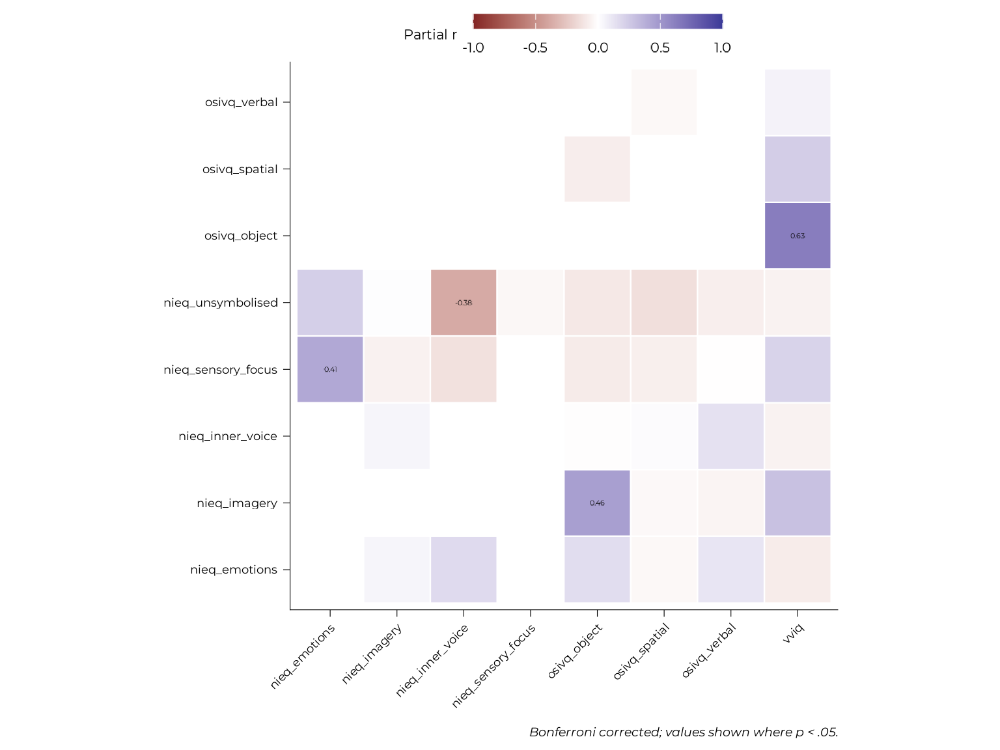
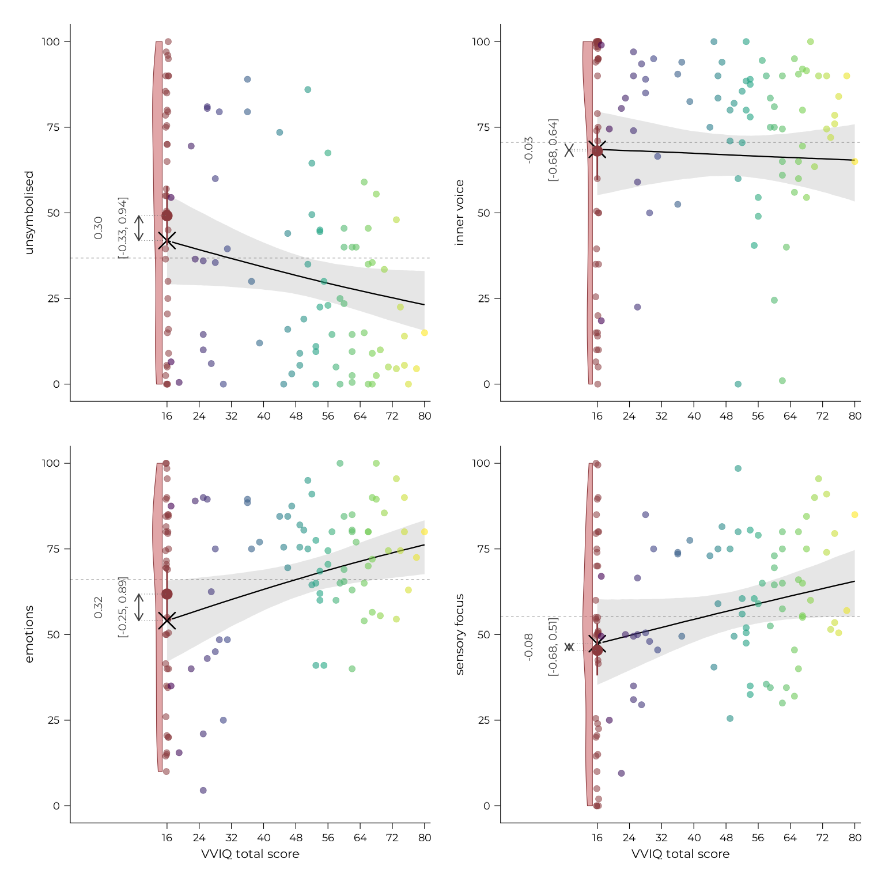
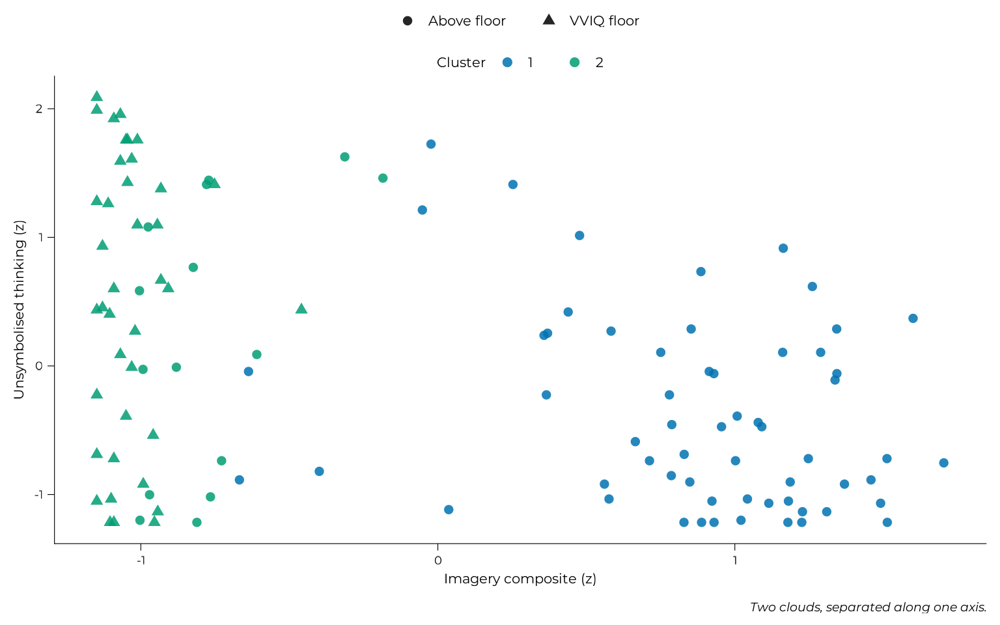

Beyond vividness: what the questionnaires say
beyond-vividness.RmdEverything on this page is exploratory. The confirmatory strand divides participants by imagery vividness. This page asks whether the questionnaires contain anything that division misses: first by looking at how the scales relate to each other, then by asking an algorithm to find groups without being told about vividness at all.
The short answer is yes on one dimension and no as a group structure.
scales <- questionnaire_scales(all_data)
scales <- dplyr::mutate(
scales,
imagery_group = factor(
dplyr::if_else(vviq == 16, "VVIQ floor", "Above floor"),
levels = c("Above floor", "VVIQ floor")
)
)1. Pooling across versions, which is allowed here and nowhere else
Every modelling page on this site currently (2026-09-03) runs on v1 alone. This one uses all 114 participants with complete questionnaire data across all versions.
Counted per person, as the participants page counts them: one participant completed both v1 and v3, and is counted once, under v1. That is why the version table below gives v3 twenty rather than the twenty-one that pages counting task sessions report.
The reasoning in the version scope page is entirely about task comparability: group balance for a behavioural contrast, non-response differing between the three versions, per-version standardisation being unstable. None of it touches a questionnaire score. The instruments are identical and were administered identically in all three versions, so version is a property of the task rather than of the scales, and pooling recovers a third more participants for the analysis that most needs them.
scales |>
dplyr::summarise(
n = dplyr::n(),
at_floor = sum(imagery_group == "VVIQ floor"),
percent_floor = round(100 * mean(imagery_group == "VVIQ floor")),
.by = version
) |>
dplyr::arrange(version) |>
knitr::kable(caption = "Participants by task version")| version | n | at_floor | percent_floor |
|---|---|---|---|
| v1 | 85 | 20 | 24 |
| v2 | 9 | 6 | 67 |
| v3 | 20 | 13 | 65 |
What pooling changes is the sample’s composition: later recruitment targeted more aphantasic participants, so the pooled sample is about a third floor group where v1 alone is a quarter. That matters for clustering, because centroids are fitted to whatever sample they are given. Section 4 tests this.
2. The scales are largely independent, and three of them are one thing
Raw correlations among overlapping instruments are close to unreadable: everything correlates with everything, because everything shares a general factor. The partial structure is what says whether a scale carries anything the others do not.
standardised <- standardise_scales(scales) |>
dplyr::select(-"imagery_group")
partial <- correlation::correlation(
dplyr::select(standardised, -"id", -"version"),
partial = TRUE, p_adjust = "bonferroni"
)
as.data.frame(partial) |>
dplyr::mutate(label = ifelse(p < 0.05, sprintf("%.2f", r), "")) |>
ggplot(aes(x = Parameter1, y = Parameter2, fill = r)) +
geom_tile(colour = "white", linewidth = 0.4) +
geom_text(aes(label = label), size = 3) +
scale_fill_gradient2(limits = c(-1, 1), name = "Partial r",
guide = guide_colourbar(barwidth = 10, barheight = 0.6)) +
coord_fixed() +
labs(x = NULL, y = NULL,
caption = "Bonferroni corrected; values shown where p < .05.") +
theme_pdf(base_size = 16, axis.text.x = element_text(angle = 45, hjust = 1),
legend.position = "top")
After partialling, the only strongly connected block is the three imagery measures: VVIQ, OSIVQ’s object subscale, and NIEQ’s mental-imagery dimension. Everything else is near zero.
imagery_components <- c("vviq", "osivq_object", "nieq_imagery")
components <- dplyr::select(standardised, tidyselect::all_of(imagery_components))
knitr::kable(round(stats::cor(components, method = "spearman"), 3),
caption = "The three imagery measures, raw correlations")| vviq | osivq_object | nieq_imagery | |
|---|---|---|---|
| vviq | 1.000 | 0.865 | 0.869 |
| osivq_object | 0.865 | 1.000 | 0.857 |
| nieq_imagery | 0.869 | 0.857 | 1.000 |
Cronbach’s alpha of the three is 0.970, against correlations of 0.15 to 0.38 with the other OSIVQ subscales. Three instruments, three response formats, one construct.
That has a consequence for anything that comes next. Left as three features, imagery would be triple-weighted in any distance metric, so a clustering would recover imagery groups by construction and could not possibly find anything else. I’ve collapsed them into one standardised composite, which is what makes the question in this page’s title answerable.
The rest being largely independent also means dimension reduction should stop there. Reducing further would destroy exactly the distinctions the clustering is meant to find.
3. The finding: unsymbolised thinking rises as vividness falls
Before any clustering, the simplest question. The NIEQ asks about five modes of inner experience. How do the two imagery groups differ on each?
nieq_contrast <- purrr::map(
grep("^nieq_", names(scales), value = TRUE),
function(dimension) {
floor_values <- scales[[dimension]][scales$imagery_group == "VVIQ floor"]
above_values <- scales[[dimension]][scales$imagery_group == "Above floor"]
pooled_sd <- sqrt(
((length(floor_values) - 1) * stats::var(floor_values) +
(length(above_values) - 1) * stats::var(above_values)) /
(length(floor_values) + length(above_values) - 2)
)
# computed before the tibble: inside it, later expressions see earlier
# columns, so naming a column `floor` would make this test two means
test <- suppressWarnings(stats::wilcox.test(floor_values, above_values))
tibble::tibble(
dimension = sub("^nieq_", "", dimension),
floor = mean(floor_values), above_floor = mean(above_values),
d = (mean(floor_values) - mean(above_values)) / pooled_sd,
p = test$p.value
)
}
) |>
purrr::list_rbind() |>
dplyr::arrange(dplyr::desc(d))
nieq_contrast |>
# p rounded to 3 decimals reads as 0.000 for the two that matter most
dplyr::mutate(p = format.pval(p, digits = 2, eps = 1e-4)) |>
knitr::kable(digits = 2, caption = "NIEQ dimensions by imagery group")| dimension | floor | above_floor | d | p |
|---|---|---|---|---|
| unsymbolised | 52.26 | 28.78 | 0.83 | 0.00031 |
| inner_voice | 64.04 | 73.97 | -0.36 | 0.98808 |
| emotions | 59.63 | 69.42 | -0.42 | 0.11747 |
| sensory_focus | 47.71 | 59.12 | -0.49 | 0.05327 |
| imagery | 2.37 | 54.76 | -2.17 | < 1e-04 |
Unsymbolised thinking is the only dimension where the floor group scores higher, and the group effect is large. Participants who report no voluntary visual imagery recognise themselves more in what the NIEQ, following Hurlburt’s descriptive experience sampling work, calls thinking that proceeds without words or images.
One row in that table reads like a mistake and is not. Inner
voice has a moderate negative effect size next to a p value of
almost exactly 1, which looks impossible beside a smaller effect at p =
.05. It is genuine: d is computed from group means and a
pooled SD, while p comes from a two-sided Mann-Whitney test
on ranks, and the two answer different questions. A distribution can be
shifted in its mean and almost perfectly overlapping in its ranks, which
is what a heavy tail on one side does. The test is the one to trust for
a group claim here, and it says nothing is happening.
That is the group contrast. The models below replace it with something more precise:
nieq_data <- dplyr::mutate(
scales,
complete_aphant = factor(
dplyr::if_else(vviq == 16, "floor", "above_floor"),
levels = c("above_floor", "floor")
)
)
# Beta after a Smithson-Verkuilen squeeze, as on the accuracy pages: every
# dimension has participants at a boundary, so a Gaussian would put mass
# outside the scale. The imagery dimension is excluded because it
# correlates 0.87 with the score that defines the grouping.
nieq_dimensions <- c("nieq_unsymbolised", "nieq_inner_voice",
"nieq_emotions", "nieq_sensory_focus")
nieq_panel <- function(dimension, model_only = FALSE) {
fit_data <- nieq_data
fit_data$score <- squeeze_boundaries(fit_data[[dimension]] / 100)
model <- fit_brms_model(
formula = brms::bf(score ~ vviq + complete_aphant, family = brms::Beta()),
data = fit_data,
prior = response_priors(NULL, terms = c("vviq", "complete_aphant")),
file = system.file(
"models", paste0("nieq-floor-", sub("^nieq_", "", dimension), ".rds"),
package = pkg),
file_refit = refit
)
if (model_only) return(model)
grid <- tibble::tibble(
vviq = seq(16, 80, length.out = 200),
complete_aphant = factor("above_floor", levels = c("above_floor", "floor"))
)
above <- brms::posterior_epred(model, newdata = grid)
floor_row <- grid[1, ]
floor_row$complete_aphant <- factor("floor",
levels = c("above_floor", "floor"))
floor_draws <- as.vector(brms::posterior_epred(model, newdata = floor_row))
observed <- tibble::tibble(x = nieq_data$vviq,
y = nieq_data[[dimension]] / 100)
effect <- brms::fixef(model)["complete_aphantfloor", ]
plot_floor_group(
observed = dplyr::filter(observed, x > 16),
fitted = tibble::tibble(
x = grid$vviq,
estimate = apply(above, 2, stats::median),
lower = apply(above, 2, stats::quantile, 0.025),
upper = apply(above, 2, stats::quantile, 0.975)
),
floor_draws = floor_draws,
floor_observed = dplyr::filter(observed, x == 16)$y,
effect_label = sprintf("%.2f\n[%.2f, %.2f]", effect[["Estimate"]],
effect[["Q2.5"]], effect[["Q97.5"]]),
# only the bottom row carries the axis label, and the arrow needs more
# room at half width than it does on a full-width panel
x_lab = if (dimension %in% nieq_dimensions[3:4]) "VVIQ total score",
y_lab = gsub("_", " ", sub("^nieq_", "", dimension)),
base_size = 16, point_size = 1.8,
left_expansion = 0.24, arrow_nudge = -7
) +
ggplot2::scale_y_continuous(
labels = \(x) round(100 * x), limits = c(0, 1))
}
patchwork::wrap_plots(purrr::map(nieq_dimensions, nieq_panel), ncol = 2)
Fitted in the same floor-group form as every other model on this site: a slope among everyone above the vividness floor, plus a single offset for the group at it. That separates two things a group comparison cannot, and here it reverses the reading of both.
purrr::map(nieq_dimensions, function(dimension) {
estimates <- brms::fixef(nieq_panel(dimension, model_only = TRUE))
tibble::tibble(
dimension = gsub("_", " ", sub("^nieq_", "", dimension)),
floor_offset = estimates["complete_aphantfloor", "Estimate"],
offset_lower = estimates["complete_aphantfloor", "Q2.5"],
offset_upper = estimates["complete_aphantfloor", "Q97.5"],
vviq_slope = estimates["vviq", "Estimate"],
slope_lower = estimates["vviq", "Q2.5"],
slope_upper = estimates["vviq", "Q97.5"]
)
}) |>
purrr::list_rbind() |>
dplyr::arrange(dplyr::desc(floor_offset)) |>
knitr::kable(digits = 3, caption = "Offset and slope, separated")| dimension | floor_offset | offset_lower | offset_upper | vviq_slope | slope_lower | slope_upper |
|---|---|---|---|---|---|---|
| emotions | 0.317 | -0.251 | 0.891 | 0.016 | 0.003 | 0.028 |
| unsymbolised | 0.297 | -0.332 | 0.935 | -0.014 | -0.028 | 0.000 |
| inner voice | -0.025 | -0.683 | 0.638 | -0.002 | -0.017 | 0.013 |
| sensory focus | -0.080 | -0.677 | 0.507 | 0.012 | -0.001 | 0.025 |
Not one floor offset excludes zero. Whatever distinguishes the groups on these dimensions is not a discontinuity at the floor.
Unsymbolised thinking is a gradient, not a floor effect. Its slope is the informative estimate, running downward across the whole vividness range, while its offset is uninformative. The group contrast in the table above was real, but it describes the low end of a continuum rather than something specific to participants with no imagery at all. That is the same fact as its partial correlation with the imagery composite, which the §2 heatmap cannot show because the composite does not exist until the three imagery scales are collapsed:
composite_partials <- standardise_scales(scales) |>
dplyr::select(-"imagery_group", -"id", -"version") |>
add_imagery_composite() |>
correlation::correlation(partial = TRUE, p_adjust = "bonferroni") |>
as.data.frame() |>
dplyr::filter(Parameter1 == "imagery" | Parameter2 == "imagery") |>
dplyr::transmute(
scale = ifelse(Parameter1 == "imagery", Parameter2, Parameter1),
partial_r = r, CI_low, CI_high, p
) |>
dplyr::arrange(partial_r)
knitr::kable(composite_partials, digits = 3,
caption = "Partial correlations with the imagery composite")| scale | partial_r | CI_low | CI_high | p |
|---|---|---|---|---|
| nieq_unsymbolised | -0.370 | -0.519 | -0.200 | 0.001 |
| nieq_inner_voice | -0.064 | -0.245 | 0.121 | 1.000 |
| osivq_verbal | 0.036 | -0.149 | 0.218 | 1.000 |
| nieq_sensory_focus | 0.133 | -0.052 | 0.310 | 1.000 |
| osivq_spatial | 0.296 | 0.118 | 0.455 | 0.030 |
| nieq_emotions | 0.298 | 0.121 | 0.457 | 0.027 |
It behaves like an inverse imagery measure, consistently, all the way up.
And a dimension the group contrast missed. NIEQ emotions has the only slope clearly excluding zero, and it is positive: more vivid imagers report more emotional inner experience. Dichotomised, that dimension gave d = -0.42 at p = .12 and would have been set aside.
Both readings changed when the dichotomy was dropped, which is the argument for fitting these at all.
This is a positive claim about what low-vividness experience is, from an instrument built to ask it. It is worth saying plainly because the rest of this page is a null. But it is a claim about a gradient: it describes the low end of a continuum, and nothing here isolates participants with no imagery at all from those with a little.
4. The clustering, and what it was asked to find
The criterion was fixed before the clustering ran, so that the outcome could not be described as whatever it turned out to be:
- Success: clusters that split the floor group. That would be a distinction the confirmatory strand cannot make at all.
- Null: clusters that recover the vividness grouping. The structure is imagery, and there is nothing else.
Consensus clustering was preferred to a algorithm, because the central risk in this kind of analysis is finding groups that do not exist. A partition that survives three algorithms and three consensus functions is less likely to be an artifact of any one of them. The number of clusters is selected by algorithms, not pre-specified.
features <- standardise_scales(dplyr::select(scales, -"imagery_group")) |>
add_imagery_composite()
feature_matrix <- as.matrix(dplyr::select(features, -"id", -"version"))
rownames(feature_matrix) <- features$id
clustering <- diceR::dice(
feature_matrix, nk = 2:5, reps = 10, p.item = 0.8,
algorithms = c("gmm", "pam", "hc"),
cons.funs = c("kmodes", "majority", "CSPA"),
seed = 20260825, progress = FALSE, verbose = FALSE
)
tibble::tibble(
k = 2:5,
mean_silhouette = vapply(clustering$indices$ii,
\(index) mean(as.data.frame(index)$silhouette),
numeric(1))
) |>
knitr::kable(digits = 3, caption = "Cluster separation by k")| k | mean_silhouette |
|---|---|
| 2 | 0.188 |
| 3 | 0.155 |
| 4 | 0.152 |
| 5 | 0.166 |
Two clusters, on the silhouette and on the proportion of ambiguous clustering alike, and all three consensus functions returned two independently.
scales$cluster <- factor(clustering$clusters[, "CSPA"])
table(cluster = scales$cluster, imagery = scales$imagery_group) |>
as.data.frame.matrix() |>
tibble::rownames_to_column("cluster") |>
dplyr::mutate(cluster = paste("Cluster", cluster)) |>
knitr::kable(caption = "Clusters against the vividness split")| cluster | Above floor | VVIQ floor |
|---|---|---|
| Cluster 1 | 60 | 0 |
| Cluster 2 | 15 | 39 |
The adjusted Rand index against the vividness grouping is 0.54, and every participant at the vividness floor falls in one cluster. By the criterion above, that is the null.
features |>
dplyr::mutate(cluster = scales$cluster,
imagery_group = scales$imagery_group) |>
ggplot(aes(x = imagery, y = nieq_unsymbolised, colour = cluster,
shape = imagery_group)) +
geom_point(size = 2.4, alpha = 0.85) +
scale_colour_manual(values = unname(palette.colors()[c(6, 4)]),
name = "Cluster") +
scale_shape_manual(values = c(`Above floor` = 16, `VVIQ floor` = 17),
name = NULL) +
labs(x = "Imagery composite (z)", y = "Unsymbolised thinking (z)",
caption = "Two clouds, separated along one axis.")
The solution is one axis, dichotomised. Every feature separates in the same direction except unsymbolised thinking, which separates in the opposite one, and section 2 explains why: it is an inverse imagery measure rather than a second dimension.
One respect in which this is not purely a relabelling: the boundary is not the scale floor. The low-imagery cluster holds the floor participants plus several low-vividness participants above it, so the line is drawn at a vividness threshold rather than at the floor.
5. Is the pooling innocent?
Section 1 flagged that v1 participants’ labels are partly determined by participants from versions that enter no other analysis. Let’s refit on v1 alone and compare.
v1_rows <- features$version == "v1"
restricted <- diceR::dice(
feature_matrix[v1_rows, , drop = FALSE], nk = 2:5, reps = 10, p.item = 0.8,
algorithms = c("gmm", "pam", "hc"),
cons.funs = c("kmodes", "majority", "CSPA"),
seed = 20260825, progress = FALSE, verbose = FALSE
)
stability <- cluster_stability(
pooled = clustering$clusters[v1_rows, "CSPA"],
restricted = restricted$clusters[, "CSPA"]
)
tibble::tibble(
`v1 participants` = sum(v1_rows),
`agreement after matching labels` = stability$agreement,
`adjusted Rand` = stability$adjusted_rand
) |>
knitr::kable(digits = 3, caption = "Pooled fit against a v1-only fit")| v1 participants | agreement after matching labels | adjusted Rand |
|---|---|---|
| 85 | 0.976 | 0.907 |
The v1 partition is essentially the same either way, so the pooling is innocent and the larger sample is kept. Had it not been, the pooled solution would have been describing the versions excluded from everything else, and it would have been dropped.
6. Two things tried afterwards
Everything below was run after seeing the null, which makes it exploration of a null rather than a second attempt at the same test.
1) Is there structure inside the floor group? Restricting to the floor group removes the axis that dominated, so anything found there is necessarily beyond vividness. Features were re-standardised within the sub-sample and imagery scales were dropped since they barely vary in it.
floor_features <- scales |>
dplyr::filter(imagery_group == "VVIQ floor") |>
dplyr::select(-"vviq", -"osivq_object", -"nieq_imagery", -"imagery_group",
-"cluster") |>
standardise_scales()
floor_matrix <- as.matrix(dplyr::select(floor_features, -"id", -"version"))
floor_clustering <- diceR::dice(
floor_matrix, nk = 2:4, reps = 10, p.item = 0.8,
algorithms = c("gmm", "pam", "hc"),
cons.funs = c("kmodes", "majority", "CSPA"),
seed = 20260825, progress = FALSE, verbose = FALSE
)
knitr::kable(floor_clustering$indices$pac, digits = 3,
caption = "Proportion of ambiguous clustering, floor group only")| k | PAM_Euclidean | HC_Euclidean | GMM |
|---|---|---|---|
| 2 | 0.617 | 0.217 | 0.756 |
| 3 | 0.636 | 0.436 | 0.753 |
| 4 | 0.397 | 0.216 | 0.638 |
The consensus functions returned a partition and agreed with each other. The stability indices say not to believe it. The proportion of ambiguous clustering runs from about 0.22 to 0.76 across algorithms, meaning a large share of participant pairs cluster together inconsistently across resamples.
Had the indices supported it, the claim would have been a contrast between participants high on both inner voice and unsymbolised thinking and participants low on both. That deserves a properly powered study of its own.
2) Forcing three clusters on the full sample splits off two above-floor participants and leaves the floor group otherwise intact. It changes nothing.
7. The validation step is not run
The plan was to refit the main composition model on the cluster labels, using task behaviour that had been held out throughout. Its stated precondition was clusters that are not simply imagery groups. That precondition is not met. Refitting anyway would reproduce the floor-group analysis with the boundary moved slightly.
So the exploratory strand ends here, with two results of unequal weight. The clustering finds nothing that vividness does not already capture. The questionnaires themselves do: unsymbolised thinking rises steadily as imagery vividness falls, which points at a description of what inner experience is like at that end of the scale. It is more a gradient than a property of complete aphantasia specifically, as shown by the models in section 3.
Continuing through the Extended Online Report: this page follows the joint model. To keep reading in order, continue to model diagnostics next. Or see model diagnostics and implementation notes for the technical detail behind these models.
#> ─ Session info ───────────────────────────────────────────────────────────────
#> setting value
#> version R version 4.6.1 (2026-06-24)
#> os Ubuntu 22.04.5 LTS
#> system x86_64, linux-gnu
#> ui X11
#> language en
#> collate C.UTF-8
#> ctype C.UTF-8
#> tz UTC
#> date 2026-08-31
#> pandoc 3.8.3 @ /opt/hostedtoolcache/pandoc/3.8.3/x64/ (via rmarkdown)
#> quarto NA
#>
#> ─ Packages ───────────────────────────────────────────────────────────────────
#> ! package * version date (UTC) lib source
#> abind 1.4-8 2024-09-12 [2] CRAN (R 4.6.1)
#> aphantasiaWMStrats * 0.1 2026-08-31 [1] local
#> assertthat 0.2.1 2019-03-21 [2] CRAN (R 4.6.1)
#> backports 1.5.1 2026-04-03 [2] CRAN (R 4.6.1)
#> bayesplot 1.16.0 2026-08-25 [2] CRAN (R 4.6.1)
#> bayestestR 0.18.1 2026-05-24 [2] CRAN (R 4.6.1)
#> bridgesampling 1.2-1 2025-11-19 [2] CRAN (R 4.6.1)
#> brms 2.23.0 2025-09-09 [2] CRAN (R 4.6.1)
#> Brobdingnag 1.2-9 2022-10-19 [2] CRAN (R 4.6.1)
#> bslib 0.12.0 2026-08-04 [2] CRAN (R 4.6.1)
#> cachem 1.1.0 2024-05-16 [2] CRAN (R 4.6.1)
#> checkmate 2.3.4 2026-02-03 [2] CRAN (R 4.6.1)
#> P class 7.3-23 2025-01-01 [?] CRAN (R 4.6.1)
#> cli 3.6.6 2026-04-09 [2] CRAN (R 4.6.1)
#> clue 0.3-68 2026-03-26 [2] CRAN (R 4.6.1)
#> P cluster 2.1.8.2 2026-02-05 [?] CRAN (R 4.6.1)
#> clusterCrit 1.3.0 2023-11-23 [2] CRAN (R 4.6.1)
#> clValid 0.7 2021-02-14 [2] CRAN (R 4.6.1)
#> coda 0.19-4.1 2024-01-31 [2] CRAN (R 4.6.1)
#> P codetools 0.2-20 2024-03-31 [?] CRAN (R 4.6.1)
#> combinat 0.0-8 2012-10-29 [2] CRAN (R 4.6.1)
#> correlation 0.8.8 2025-07-08 [2] CRAN (R 4.6.1)
#> crayon 1.5.3 2024-06-20 [2] CRAN (R 4.6.1)
#> curl 8.0.0 2026-08-25 [2] CRAN (R 4.6.1)
#> datawizard 1.3.1 2026-04-26 [2] CRAN (R 4.6.1)
#> desc 1.4.3 2023-12-10 [2] CRAN (R 4.6.1)
#> diceR 3.2.0 2026-08-25 [2] CRAN (R 4.6.1)
#> digest 0.6.39 2025-11-19 [2] CRAN (R 4.6.1)
#> distributional 0.8.1 2026-06-27 [2] CRAN (R 4.6.1)
#> dplyr 1.2.1 2026-04-03 [2] CRAN (R 4.6.1)
#> emmeans 2.0.4 2026-07-15 [2] CRAN (R 4.6.1)
#> estimability 2.0.0 2026-06-26 [2] CRAN (R 4.6.1)
#> evaluate 1.0.5 2025-08-27 [2] CRAN (R 4.6.1)
#> farver 2.1.2 2024-05-13 [2] CRAN (R 4.6.1)
#> fastmap 1.2.0 2024-05-15 [2] CRAN (R 4.6.1)
#> forcats 1.0.1 2025-09-25 [2] CRAN (R 4.6.1)
#> fs 2.1.0 2026-04-18 [2] CRAN (R 4.6.1)
#> generics 0.1.4 2025-05-09 [2] CRAN (R 4.6.1)
#> ggplot2 * 4.0.3 2026-04-22 [2] CRAN (R 4.6.1)
#> glue 1.8.1 2026-04-17 [2] CRAN (R 4.6.1)
#> gridExtra 2.3.1 2026-06-25 [2] CRAN (R 4.6.1)
#> gtable 0.3.6 2024-10-25 [2] CRAN (R 4.6.1)
#> haven 2.5.5 2025-05-30 [2] CRAN (R 4.6.1)
#> highr 0.12 2026-03-06 [2] CRAN (R 4.6.1)
#> hms 1.1.4 2025-10-17 [2] CRAN (R 4.6.1)
#> htmltools 0.5.9 2025-12-04 [2] CRAN (R 4.6.1)
#> httpuv 1.6.17 2026-03-18 [2] CRAN (R 4.6.1)
#> inline 0.3.21 2025-01-09 [2] CRAN (R 4.6.1)
#> insight 1.5.3 2026-08-25 [2] CRAN (R 4.6.1)
#> jquerylib 0.1.4 2021-04-26 [2] CRAN (R 4.6.1)
#> jsonlite 2.0.0 2025-03-27 [2] CRAN (R 4.6.1)
#> klaR 1.7-4 2026-02-23 [2] CRAN (R 4.6.1)
#> knitr 1.51 2025-12-20 [2] CRAN (R 4.6.1)
#> labeling 0.4.3 2023-08-29 [2] CRAN (R 4.6.1)
#> labelled 2.16.1 2026-08-20 [2] CRAN (R 4.6.1)
#> later 1.4.8 2026-03-05 [2] CRAN (R 4.6.1)
#> P lattice 0.22-9 2026-02-09 [?] CRAN (R 4.6.1)
#> lifecycle 1.0.5 2026-01-08 [2] CRAN (R 4.6.1)
#> loo 2.10.1 2026-07-24 [2] CRAN (R 4.6.1)
#> magrittr 2.0.5 2026-04-04 [2] CRAN (R 4.6.1)
#> P MASS 7.3-65 2025-02-28 [?] CRAN (R 4.6.1)
#> P Matrix 1.7-5 2026-03-21 [?] CRAN (R 4.6.1)
#> matrixStats 1.5.0 2025-01-07 [2] CRAN (R 4.6.1)
#> mclust 6.1.3 2026-07-05 [2] CRAN (R 4.6.1)
#> mime 0.13 2025-03-17 [2] CRAN (R 4.6.1)
#> miniUI 0.1.2 2025-04-17 [2] CRAN (R 4.6.1)
#> mvtnorm 1.4-2 2026-07-12 [2] CRAN (R 4.6.1)
#> P nlme 3.1-169 2026-03-27 [?] CRAN (R 4.6.1)
#> otel 0.2.0 2025-08-29 [2] CRAN (R 4.6.1)
#> patchwork 1.3.2 2025-08-25 [2] CRAN (R 4.6.1)
#> pillar 1.11.1 2025-09-17 [2] CRAN (R 4.6.1)
#> pkgbuild 1.4.8 2025-05-26 [2] CRAN (R 4.6.1)
#> pkgconfig 2.0.3 2019-09-22 [2] CRAN (R 4.6.1)
#> pkgdown 2.2.1 2026-07-07 [2] any (@2.2.1)
#> posterior 1.7.0 2026-04-01 [2] CRAN (R 4.6.1)
#> promises 1.5.0 2025-11-01 [2] CRAN (R 4.6.1)
#> purrr 1.2.2 2026-04-10 [2] CRAN (R 4.6.1)
#> questionr 0.8.2 2026-01-21 [2] CRAN (R 4.6.1)
#> QuickJSR 1.11.0 2026-08-21 [2] CRAN (R 4.6.1)
#> R6 2.6.1 2025-02-15 [2] CRAN (R 4.6.1)
#> ragg 1.5.2 2026-03-23 [2] CRAN (R 4.6.1)
#> RColorBrewer 1.1-3 2022-04-03 [2] CRAN (R 4.6.1)
#> Rcpp 1.1.2 2026-07-05 [2] CRAN (R 4.6.1)
#> RcppParallel 6.2.1 2026-08-27 [2] CRAN (R 4.6.1)
#> renv 1.0.7 2024-04-11 [2] RSPM (R 4.6.1)
#> rlang 1.3.0 2026-07-05 [2] CRAN (R 4.6.1)
#> rmarkdown 2.31 2026-03-26 [2] CRAN (R 4.6.1)
#> rstan 2.32.7 2025-03-10 [2] CRAN (R 4.6.1)
#> rstantools 2.7.1 2026-08-29 [2] CRAN (R 4.6.1)
#> rstudioapi 0.19.0 2026-06-11 [2] CRAN (R 4.6.1)
#> S7 0.2.2 2026-04-22 [2] CRAN (R 4.6.1)
#> sass 0.4.10 2025-04-11 [2] CRAN (R 4.6.1)
#> scales 1.4.0 2025-04-24 [2] CRAN (R 4.6.1)
#> sessioninfo 1.2.4 2026-06-04 [2] CRAN (R 4.6.1)
#> shiny 1.14.0 2026-06-21 [2] CRAN (R 4.6.1)
#> showtext 0.9-8 2026-03-21 [2] CRAN (R 4.6.1)
#> showtextdb 3.0 2020-06-04 [2] CRAN (R 4.6.1)
#> StanHeaders 2.32.10 2024-07-15 [2] CRAN (R 4.6.1)
#> stringi 1.8.9 2026-08-04 [2] CRAN (R 4.6.1)
#> stringr 1.6.0 2025-11-04 [2] CRAN (R 4.6.1)
#> sysfonts 0.8.9 2024-03-02 [2] CRAN (R 4.6.1)
#> systemfonts 1.3.2 2026-03-05 [2] CRAN (R 4.6.1)
#> tensorA 0.36.2.1 2023-12-13 [2] CRAN (R 4.6.1)
#> textshaping 1.0.5 2026-03-06 [2] CRAN (R 4.6.1)
#> tibble 3.3.1 2026-01-11 [2] CRAN (R 4.6.1)
#> tidyselect 1.2.1 2024-03-11 [2] CRAN (R 4.6.1)
#> vctrs 0.7.3 2026-04-11 [2] CRAN (R 4.6.1)
#> viridisLite 0.4.3 2026-02-04 [2] CRAN (R 4.6.1)
#> withr 3.0.3 2026-06-19 [2] CRAN (R 4.6.1)
#> xfun 0.60 2026-07-09 [2] CRAN (R 4.6.1)
#> xtable 1.8-8 2026-02-22 [2] CRAN (R 4.6.1)
#> yaml 2.3.12 2025-12-10 [2] CRAN (R 4.6.1)
#>
#> [1] /tmp/RtmpTZJzeG/temp_libpath83f725132ca2
#> [2] /home/runner/.cache/R/renv/library/aphantasiaWMStrats-f7ce8556/linux-ubuntu-jammy/R-4.6/x86_64-pc-linux-gnu
#> [3] /home/runner/.cache/R/renv/sandbox/linux-ubuntu-jammy/R-4.6/x86_64-pc-linux-gnu/e7c0fad7
#>
#> * ── Packages attached to the search path.
#> P ── Loaded and on-disk path mismatch.
#>
#> ──────────────────────────────────────────────────────────────────────────────